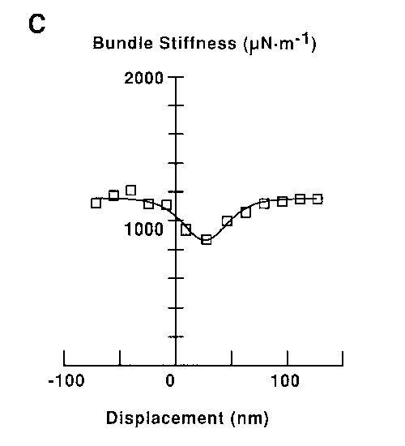

Hair cells
(A) Top of hair cell, showing cuticular plate, stereocilia, and kinocilium.
(B) Hair cell with synapses onto afferent nerves and from efferent nerves.
Hair cells in the fish lateral line sense water movement
Distribution of lateral line organs on minnow tail
Anatomy of a single organ. Two populations of cells have hair bundles oriented in opposing directions.
The cochlea, the organ of hearing.
Structure of the human ear.
Enlargement of components of the mammalian inner ear, showing semicircular canals, otolith organs, and cochlea.
Vestibular system
Organ in the inner ear that detects head position and movement
The cochlea
(A) Cross-section of the cochlea.
(B) The cochlea imagined as uncoiled to illustrate the motion of the basilar membrane.
Pressure on the oval window is communicated through the fluids of the scala vestibuli and scala tympani to the round window, producing a traveling wave of basilar membrane oscillation.
Scanning electron micrographs of hair bundles.
(A) Bullfrog sacculus. Note kinocilium with ball at top.
(B) Stereocilium bundle of an outer hair cell from the mouse cochlea. Scale bar, 1 μm.
Recording from hair cells
(B) Change in membrane potential. caused by triangle stimulus waves (10 Hz) for three amplitudes
(C) Change in membrane potential vs. amplitude of hair bundle movement.
Location of stretch sensitive channels
Change in indicator-dye fluorescence produced by the entry of Ca2+ through mechanoreceptive channels in different regions of a hair bundle, measured with two-photon confocal microscopy.
Cell had been filled with fluorescent Ca2+ indicator dye.
Tip Links
Scanning electron micrograph showing tip links (arrows) from outer hair cell of the guinea pig cochlea.
Scanning electron micrograph of a chicken auditory receptor.
Freeze-etch image of upper insertions of tip links of hair cells from guinea pig cochlea. Scale bars, 100 nm.
Proposed role of tip links in channel gating.
Gating compliance
Stiffness of hair bundle and receptor potential as functions of bundle displacement.
Amplitude of receptor potential (black curve) and bundle stiffness $k(x)$ (blue curve) as functions of hair bundle displacement.
Gating compliance
The stiffness of the hair bundle ($\mathbf{K_B}$) includes the stiffness of the stereociliary pivots ($\mathbf{K_S}$), the stiffness of the gating springs ($\mathbf{K_G}$), and a term that depends on the probability of the channel's being open:
\[ \mathbf{K_B} = \mathbf{K_S} + \mathbf{K_G} - \frac{Nz^2p(1-p)}{kT} \]
where $N$ is the number of channels and $z$ is the gating force of a single channel.
Gating compliance
The steady-state probability of the channels' being open is a sigmoidal function of bundle displacement ($X$) and of the single-channel gating force:
\[ p = \frac{1}{1+\exp{\left[ -\frac{z(X-X_0)}{kT} \right]}} \]
A model for the transduction element of the hair cell
The conductance of a transduction channel is regulated by a molecular gate that assumes two positions, open and closed.
Positive displacement of the hair bundle increases tension in the gating spring, of stiffness $\boldsymbol{\kappa_G}$
When the channel is closed, the spring is extended by a distance $x + d/2$ beyond its natural length, $l$.
Opening the channel shortens the spring by a distance $d$
Technique for the measurement of hair-bundle stiffness
A hair cell was stimulated by displacing a glass fiber adhering to kinocilium.
Displacement of the fiber base by $Y$ displaces the hair bundle by $X$.
The extent to which the calibrated fiber was bent $(Y - X)$ provided a measure of stiffness
Rapid response and adaptation dynamics
Apply a force of about 70 pN
Bundle moves rapidly about 74 nm
A transient reversal or rebound quickly occurs
Bundle relaxes to a new steady state with a time constant of 31 ms
After force pulse, bundle relaxes to old steady state with a time constant of 43 ms
Rapid response and adaptation dynamics
Families of bundle displacements (top traces) and receptor potentials (middle traces).
Gating compliance coincides with change in receptor potential

Stiffness smaller over a roughly 125 nm range of displacements and was minimal at 26 nm positive to resting position
Minimal stiffness was 290 μN/m smaller than the stiffness of 1150 μN/m when pushed far negative or far positive
Gating compliance coincides with change in receptor potential
Sensory transduction is most sensitive for deflections where bundle is least stiff
Gating springs model
Suppose that the gating spring has a stiffness $\kappa_G$. At a given displacement of the hair bundle, $x$ is the extension of the gating spring midway between the open and closed states
When the channel is closed, the energy of the transduction element comprising the spring and channel is
\[ g_c^0 = \frac{1}{2} \boldsymbol{\kappa_G}(x+d/2)^2 + \mu_c^0 \]
When the channel is open, the energy of the transduction element comprising the spring and channel is
\[ g_o^0 = \frac{1}{2} \boldsymbol{\kappa_G}(x-d/2)^2 + \mu_o^0 \]
Gating springs model
The energy difference between the open and closed states is
\[ \Delta g^0 = g_o^0 - g_c^0 = -\boldsymbol{\kappa_G} \times d \times x + \mu_0^0 - \mu_c^0 \]
The probability ($p$) of finding the channel in the open state when the system is in equilibrium is given by the Boltzmann law:
\[ p = \frac{1}{1+\exp{\left[ -z(X-X_0)/kT \right] }} \]
where the single channel gating force is $z=\boldsymbol{\kappa_G} \times d \times \gamma$
The steady-state transduction current will be proportional to $p$
Gating springs model
The force exerted by a gating spring on its insertions is $f_c = \boldsymbol{\kappa_G} (x-d/2)$ when the channel is open and $f_o = \boldsymbol{\kappa_G} (x+d/2)$ when the channel is closed.
The time average of the force exerted by one transduction element is thus
\begin{align*}
f &= p f_o + (1-p) f_c\\
&= \boldsymbol{\kappa_G}(x+d/2) -\boldsymbol{\kappa_G} d \times p
\end{align*}
Because of the lever ratio ($\gamma$) between spring elongation and bundle displacement, the force exerted at the tip of the bundle (and in the direction of bundle displacement) is $N\gamma f$
Gating springs model
The steady-state force required to hold the hair bundle at position $X$
\[ F = \mathbf{K_s} (X-X_S) + N \boldsymbol{\kappa_G} \gamma (\gamma X + x_r + d/2) -Nzp \]
in which $\mathbf{K_s}$ is the stiffness of the elastic components in parallel with the transduction elements such as the basal tapers and $X_s$ is the steady-state position in the absence of gating springs.
Differentiation of $F$ with respect to $X$ gives the bundle stiffness:
\[ \mathbf{K_B} = \mathbf{K_S} + N \boldsymbol{\kappa_G} \gamma^2 - N z^2 p(1-p)/kT \]
Adaptation
the position increased compliance should shift with the region of mechanosensitivity.
a hair cell was stimulated force pulses
the experiment was repeated while the bundle was offset by positively or negatively directed stimuli that produced steady displacements of 103 nm and -93 nm
gating compliance changes its position during adaptation